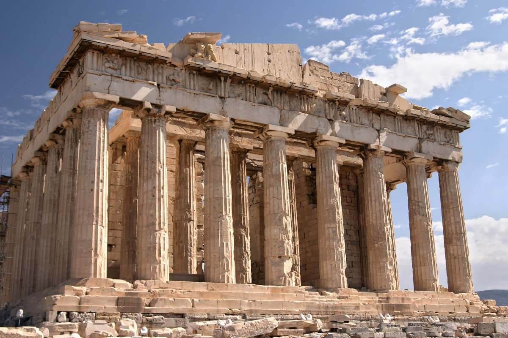
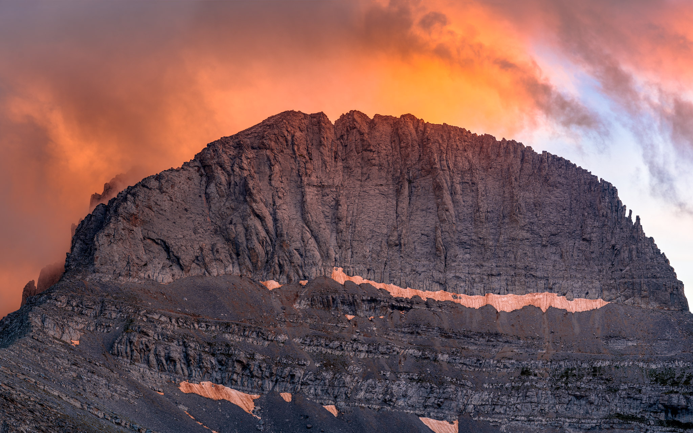

Acropolis of Athens
The acropolis is one of the most famous landmarks in Greece, offering rich history and stunning views over Athens.
Santorini
Santorini is known for its breathtaking sunsets, white-washed houses and blue-domed churches.

Mount Olympus
Mount Olympus, the home of the ancient gods, offers magnificent hiking trails and natural beauty.
